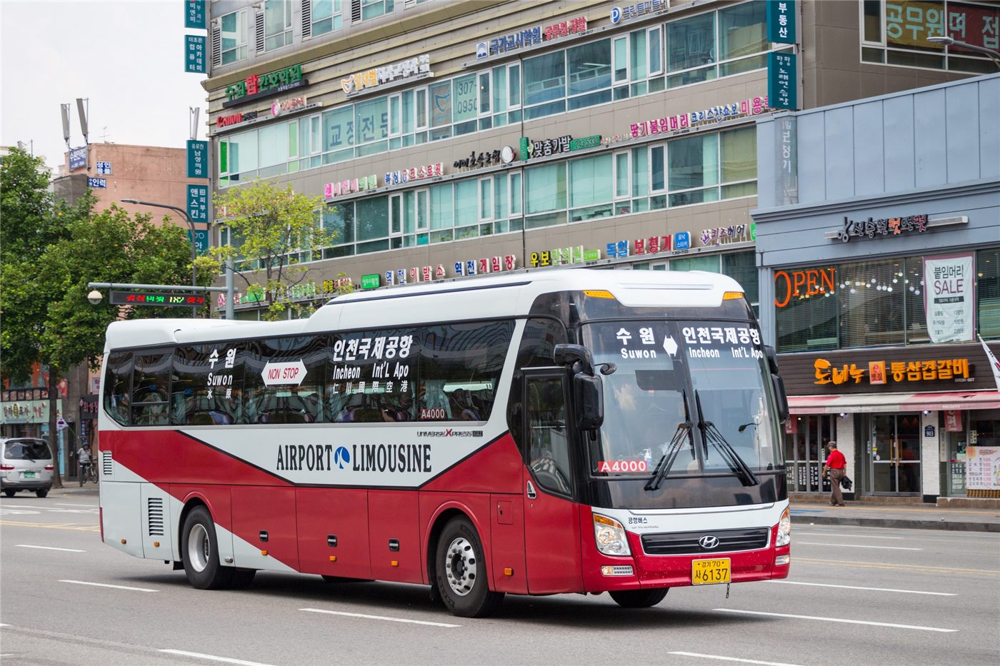

부산화교중고, 추계 여행 공고
부산화교중고등학교가 가을 여행 공고를 게시했다. 새 학기 시작에 이어 나온 학사 일정 안내다.
왕숙영 기자 · 2026.09.05
橋화인소식

부산화교중고등학교가 추계 여행 공고를 게시했다. 115학년도 제1학기가 시작된 뒤 이어진 학사 일정 안내다.
광고 문의 · 300×250공고에는 일정과 준비 사항이 담겼다. 학년별로 행선지나 출발 시각이 다르게 안내되는 경우가 있어, 학부모는 해당 학년 안내를 확인할 필요가 있다.
가을 여행은 화교 학교의 연례 행사 가운데 하나다. 학기 초에 학급 단위의 관계를 형성하는 기능을 하며, 참가 여부는 통상 학부모 동의서로 확인한다.
준비물과 비용은 공고문에 명시된다. 비용 납부 기한이 정해져 있는 경우가 많아, 기한을 넘기면 별도 문의가 필요하다.
건강상 이유로 참가가 어려운 경우에는 사전에 학교에 알리는 것이 권장된다. 인솔 인원 배치와 안전 계획이 참가 인원을 기준으로 짜이기 때문이다.
부산 지역 화교 학교의 학사 일정은 서울·인천 학교와 반드시 일치하지 않는다. 형제가 서로 다른 지역 학교에 다니는 가정은 각각 확인하는 편이 좋다.
출처·참고 (사실 확인용 — 본문은 직접 재작성)
· http://www.pusanhwagyo.net/
· http://www.pusanhwagyo.net/